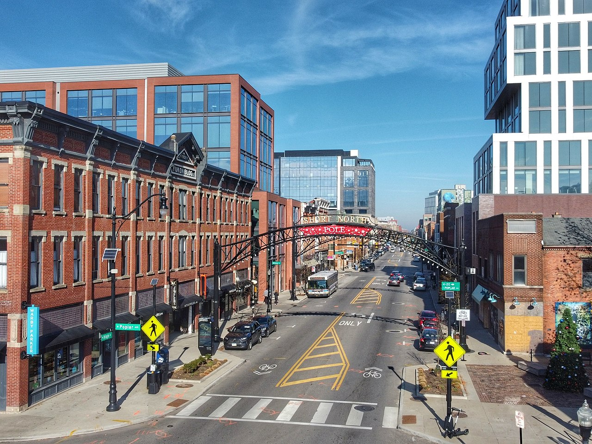

Economy
Columbus has a generally strong and diverse economy based on education, insurance, banking, fashion, defense, aviation, food, logistics, steel, energy, medical research, health care, hospitality, retail, and technology. In 2010, it was one of the 10 best big cities in the country, according to Relocate America, a real estate research firm.
In 2019, the city had five corporations named to the U.S. Fortune 500 list: Alliance Data, Nationwide Mutual Insurance Company, American Electric Power, L Brands, and Cardinal Health in suburban Dublin. Other major employers include schools (for example, Ohio State University) and hospitals (among others, the Ohio State University Medical Center and Nationwide Children's Hospital, which are among the teaching hospitals of the Ohio State University College of Medicine), hi-tech research and development including the Battelle Memorial Institute, information/library companies such as OCLC and Chemical Abstracts Service, steel processing and pressure cylinder manufacturer Worthington Industries, financial institutions such as JP Morgan Chase and Huntington Bancshares, as well as Owens Corning. Wendy's and White Castle are also headquartered in Columbus. Major foreign corporations operating or with divisions in the city include Germany-based Siemens and Roxane Laboratories, Finland-based Vaisala, Tomasco Mulciber Inc., A Y Manufacturing, as well as Switzerland-based ABB Group and Mettler Toledo.
